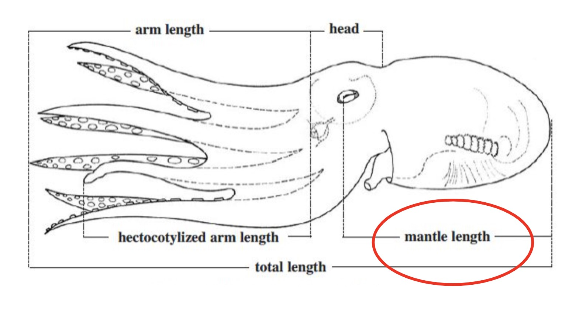
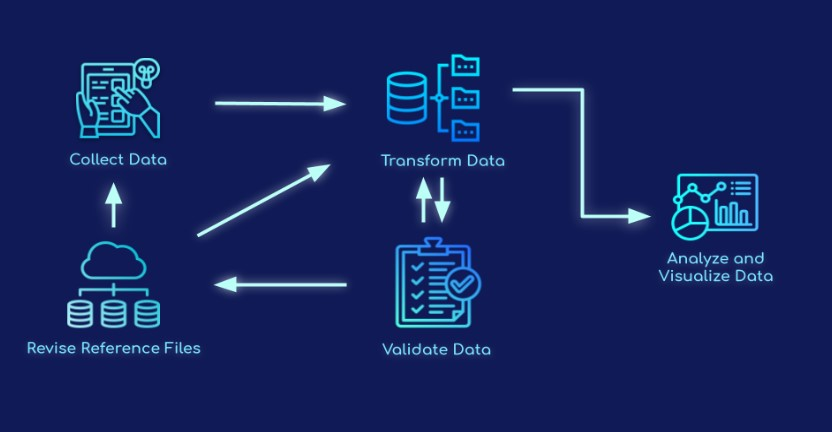

Full Guide
Matadalan ba Kolesaun Dadus Peska nian
Matadalan ida ba administrasaun peskiza atu hetan dadus peska nian
Introdusaun
Dokumentu ida-ne’e fó orientasaun no rekomendasaun ba administrasaun instrumentu peskiza tolu atu kaptura informasaun kona-ba komunidade peska no peska ne’ebé sira depende ba (Figura 1). Peskiza sira-ne’e dezeña atu aliña konteúdu ho oinsá dadus sira-ne’e sei uza no frekuénsia mudansa ne’ebé hein hela. Peskiza nivel aas liu, Komunidade Profiling, iha pergunta sira ne’ebé ajuda atu harii kompriensaun di’ak liu kona-ba atividade peska iha komunidade no kondisaun sosio-ekonomiku. Komprende paizajen sosio-ekonomiku ne’e importante liu-liu bainhira servisu hahú uluk iha komunidade. Informasaun ne’ebé halibur durante levantamentu ne’e esensiál tebes ba dezeñu estratéjia envolvimentu komunidade nian no planu amostra dadus. Peskiza kona-ba rai-nakdoko no monitorizasaun halibur dadus kona-ba rai-nakdoko husi peska. Dadus kona-ba rai-nakdoko sira-ne’e halibur dadus ne’ebé ladún dala barak no kaptura informasaun kona-ba peska nia hela-fatin, tipu sasán, esforsu, no naruk ikan ida-idak nian. Peskiza kona-ba Monitorizasaun Rai, ne’ebé idealmente hala’o loron-loron, mak peskiza peska ida-ne’ebé lalais hodi halibur informasaun mínimu ne’ebé presiza hodi halo monitorizasaun ba volume kapturasaun no mudansa valór, hanesan espésie, todan, konta no folin.

Figura 1: Timeline atu administra instrumentu peskiza tolu ne’ebé diferente iha eskala tinan ida.
Detallu levantamentu
Peskiza Profiling Komunidade
Objetivu
Komprende paizajen jerál komunidade nian no peska ne’ebé hala’o iha komunidade laran.
Dadus Koletadu
Númeru membru komunidade, peskadór, komersiante ikan, feto
Paizajen jerál peska nian ne’ebé hala’o iha komunidade laran
Uza sasán; espésie alvu; habitat peskadu; tempu; ro
Informasaun kona-ba esforsu peska no kustu
Persepsaun kona-ba kondisaun peska no habitat, ameasa
Informasaun kona-ba jestaun/regulasaun peska atuál
Identifikasaun (liu husi mapa) kona-ba baze peska importante, habitat, fatin rai-maran
Audensia alvu
10-20 informante xave sira iha komunidade laran, hanesan lider komunitáriu sira, peskadór sira ne’ebé respeitu, komersiante ikan, no feto sira.
Frekuénsia no Timing
Bainhira hahú servisu iha komunidade peska foun, hala’o Peskiza Profiling Komunidade no ezersísiu perfíl inisiál fornese dadus baze no informasaun relevante sira atu dezeña esforsu konservasaun no jestaun ne’ebé apropriadu liu ba komunidade. Repete fali Peskiza Profiling Komunidade bele ajuda dokumentasaun mudansa signifikante ne’ebé akontese iha tempu ne’ebá.
Metodolojia
Informasaun bele halibur liu husi peskiza terseiru parte (hanesan sensu, rejistu departamentu peska, etc), grupu fokus ne’ebé kompostu husi membru komunidade xave 10-20 ka informante xave sira. Lider komunitáriu sira no mós peskadór oioin ne’ebé iha koñesimentu no ikan oioin (inklui feto no joven sira) mak partisipante ideál sira ne’ebé bele inklui iha grupu fokus. Atu fasilita grupu fokus sira, rekomenda atu iha, pelumenus, fasilitadór ida no nota-nain ida. Iha grupu fokus, rekomenda mós atu iha partisipante sira atu fornese lista informasaun kontaktu ba peskadór sira iha komunidade ne’ebé bele hetan kontaktu hodi administra Peskiza Uma-kain. Karik la konsege hala’o Peskiza Profiling Komunidade iha formatu grupu fokus, alternativa ida mak atu administra pergunta sira hanesan ho peskiza individuál ho informante xave sira no hato’o resposta sira. Pergunta sira ne’ebé inklui iha peskiza perfíl komunidade nian no rekomendasaun sira ba diskusaun grupu fokus hala’o nian bele hetan iha Apendise A iha kraik.
Peskiza Monitorizasaun Rai-Nabeen
Objetivu
Kaptura dadus xave sira ne’ebé presiza atu kalkula indikadór sira ne’ebé bazeia ba naruk simples kona-ba saúde peska no atu halo monitorizasaun ba mudansa sira iha produsaun peska, valór no kompozisaun peska.
Dadus Koletadu
Data to’o mai
Fatin ba rai
Naran negosiante ikan
Naran peskadór
Esforsu Peska (loron peska)
Identidade espésie (lokál, naran komún, sientifika)
Totál konta
Totál todan
Totál folin
Razaun totál kaer la fa’an, karik aplikavel
Audensia alvu
Peskadór sira bainhira sira rai sira-nia kaer ka iha sosa ikan nia uma/ merkadu.
Frekuénsia no Timing
Peskiza Monitorizasaun Rai tenke hala’o loroloron ka dala barak liu. Halo Peskiza Monitorizasaun Rai molok no hafoin implementasaun hodi avalia efeitu sira husi enserramentu peska ka estratéjia jestaun sira seluk. Ami rekomenda atu halibur dadus loron 30 molok no hafoin períodu taka temporáriu. Durante loron hitu primeiru husi períodu amostra nian, ami rekomenda katak enumerador sira hala’o Peskiza Monitorizasaun Landings loroloron. Karik bele, kontinua halo monitorizasaun loron-loron ba períodu loron 30 tomak. Karik ida-ne’e la posivel, halo peskiza pelumenus 80% husi loron sira iha loron 30 nia laran. Ami mós rekomenda peskiza 80% ka liu husi peskadór sira ne’ebé tun iha loron ida-idak molok ka hafoin taka. Distribui esforsu levantamentu reprezentativu entre peskadór ro no peskadór la’ós ro. Halibur dadus husi peskadór hotu-hotu ne’ebé tun iha suku laran, maske peskadór sira-ne’e tama ka lae iha fatin taka nian.
Ba enserramentu ba tempu naruk, asegura katak dadus sira-ne’e halibur durante fulan ne’ebé hanesan ba tinan ida-idak atu kaptura mudansa sira durante períodu enserramentu. Se ida-ne’e la bele haree, ami rekomenda atu halibur dadus durante fulan ne’ebé hanesan molok no hafoin taka tiha. Hanesan hateten ona iha leten, ami rekomenda peskiza pelumenus 80% husi loron iha fulan ida-ne’e nia laran no 80% husi peskadór sira ne’ebé tun iha loron ida-idak.
Metodolojia
Uza formuláriu Kobo, hasoru peskadór sira iha fatin tun nian atu rejista sira-nia kaer.
Peskiza Profiling ba rai-nakdoko
Objetivu
Komprende tendénsia atu kaer.
Dadus Koletadu
Data to’o mai
Fatin ba rai
Rai peska primária
Naran negosiante ikan.
Naran peskadór
Esforsu peska (hours no loron peska/gleaning)
Tipu ro (numeru rejistu ro, númeru ekipa)
Identidade espésie (lokál, naran komún, sientifika)
Uza ai-tonka
Habitat peskadu
Totál konta
Totál todan
Totál folin
Razaun totál kaer la fa’an, karik aplikavel
Ezemplu pesoál no naruk individuál (Figura 2-8)
Dadus ezemplu espesífiku husi parseiru (seksu, kualidade kapturasaun, Gonads, stylet, # traps, etc.)
Audensia alvu
Reprezentante amostra kapturasaun iha komunidade laran. Rejista pelumenus amostra 50 (idealmente 100) ba espésie alvu ida-idak, reprezenta tipu sasán oioin no perfíl peskadór sira.
Frekuénsia no Timing
Peskiza ida-ne’e tenke hala’o iha inísiu envolvimentu iha komunidade ida no tuir mai hala’o kada tinan ida to’o tinan rua, molok no hafoin implementa estratéjia jestaun, ka tuir nesesidade atu esplika redusaun sira ne’ebé observa liuhosi dadus monitorizasaun. Uza formuláriu Kobo, hasoru peskadór sira iha fatin tun hodi halo amostra ba sira-nia kaer no rejista sira-nia atividade peska.
Metodolojia
Uza formuláriu Kobo, hasoru peskadór sira iha fatin tun hodi halo amostra ba sira-nia kaer no rejista sira-nia atividade peska.
Padraun Medida: Tipu naruk atu sukat tuir espésie grupu

Figura 2: Total naruk tenke uza atu sukat ikan-fuan, ai-tarak no ai-tarak (AFS).

Figura 3: tenke uza disk luan atu sukat rai-rahun no eskada.

Figura 4: Karapace width tenke uza bainhira sukat karau (Suryandari et. al, 2018).

Figura 5: Mantajen nia naruk tenke uza bainhira sukat oktopu no squid (FAO).

Figura 6: Karapace nia naruk tenke uza bainhira sukat shrimp no lobster (Hart et al. 2001).

Figura 7: Loron tenke uza bainhira sukat bivalves no gastropods.

Figura 8: Total naruk tenke uza bainhira sukat tasi-kuak. Tenke uza luan ka diameter teste bainhira sukat urina tasi nian.
Data Flow Overview
Kolesaun dadus, validasaun, transformasaun, no vizualizasaun mak komponente prinsipál haat iha sistema dadus. Aplikasaun software prinsipál ne’ebé uza mak KoboToolBox, Smartsheet, PostgreSQL, no R.
KoboToolBox mak software ida-ne’ebé livre no nakloke, ne’ebé nu’udar toolkit ida-ne’ebé forte ba kolesaun dadus ne’ebé asesivel liu husi ambiente dezafiu no plataforma oioin, hanesan ekipamentu movel, komputadór no surat-tahan. Enumerador sira halibur dadus kona-ba kondisaun sosioekonomiku no ekolojiku ne’ebé esensiál atu avalia komunidade peska no estatutu sira liuhosi kestionáriu levantamentu KoboToolBox. Smartsheet mak plataforma jestaun servisu kolaborativu ida-ne’ebé fornese interfesaun fleksivel no intuitivu ba organizasaun sira atu planeia, halo monitorizasaun, automatiza, no jere projetu no prosesu oioin iha tempu real. Fail referénsia sira ne’ebé uza atu halo formuláriu levantamentu no liga dadus adisionál ba dadus master sira jere iha Smartsheet. Aleinde ne’e, dadus sira-ne’e hetan validasaun iha Smartsheet. PostgreSQL mak sistema jestaun baze dadus ne’ebé livre no nakloke uza nu’udar armazén dadus ba aplikasaun web, analítiku no jeospasial oioin, enkuantu armazenamentu dadus ne’ebé la estruturadu no estruturadu iha produtu ida deit. R mak ambiente software no lian programa ne’ebé livre no nakloke ne’ebé uza ba siénsia dadus, komputasaun estatístika, no vizualizasaun dadus. Dadus dashboard sira-ne’e harii ho pakote Shiny husi lian programa R no organiza iha shinishapps.io, plataforma ida hanesan servisu (PaaS) hodi organiza aplikasaun web Shiny (Aplikasaun).

Figura 9: Diagrama Data Flow.
Kolesaun dadus envolve sistemátiku halibur no sukat informasaun hosi fonte relevante sira kona-ba variabilidade interese ba foti desizaun, planeamentu estratéjiku, avaliasaun ba rezultadu, no objetivu sira seluk. Liu husi inkorpora dadus kuantitativu no kualitativu iha kestionáriu levantamentu, ita dezenvolve kompriensaun kle’an liu kona-ba kondisaun sosioekonomiku no ekolojiku ne’ebé relevante ba komunidade peska no estratéjia jestaun adaptativu sira. Validasaun dadus refere ba aplikasaun métodu sira atu sukat kondisaun sira husi dadus ne’ebé halibur ona no determina se dadus ne’ebé halibur ona kumpre kriteriu kualidade ne’ebé define ona, hanesan loloos, konsisténsia, relevante, kompletu, no úniku. Transformasaun dadus transforma, hamoos, no estrutura dadus primeiru ba formatu ne’ebé bele uza ne’ebé bele analiza no avalia ba foti desizaun. Análize dadus no vizualizasaun envolve dezeña no kria gráfiku ka hatudu informasaun ne’ebé asesivel hodi komunika dadus kualitativu no kuantitativu ne’ebé kompleksu antes ne’e halibur, verifika, no transforma iha audensia alvu sira. Ita deskreve ona prosesu flow dadus iha kraik:
Dadus sira-ne’e halibur liu husi formuláriu levantamentu KoboToolBox.
Dadus dada ba baze dadus.
Se enumerador hili ona opsaun resposta pre-populadu iha levantamentu, dadus sira-ne’e la presiza hetan validasaun no bele liu diretamente ba prosesu análize dadus no vizualizasaun.
Kuandu enumerador hatama manualmente dadus hanesan peskadór foun, sosa-nain, koletor dadus, fatin rai-maran, ka espésie sira, dadus sira-ne’e verifika iha Smartsheet molok inklui iha tabela dadus finál no haree iha dashboard. Lideransa ekipa kampu sira hetan notifikasaun liuhosi email bainhira dadus prontu atu halo validasaun. Ekipa lider sira sei halo kontrolu manualmente ba tabela kontrolu kualidade hodi konfirma katak informasaun foun ne’ebé adisionál ne’e válidu.
Hafoin validasaun, dadus foun sira dudu ba arkivu referénsia sira no fila fali ba baze-dadus ba transformasaun finál molok analiza no haree.
Bainhira dada dadus ba arkivu referénsia sira, lideransa ekipa sira sei hetan notifikasaun liuhosi email se presiza informasaun adisionál ruma iha arkivu referénsia sira.
Tuirmai, fail referénsia sira ne’ebé atualiza ona sei hatama ba plataforma KoboToolBox atu inklui iha formuláriu sira.
Dadus ne’ebé atualiza ona husi arkivu referénsia sira mós uza iha prosesu transformasaun dadus hodi hamutuk ho kampu dadus adisionál sira hanesan koordenadu no jéneru.
Pasu finál sira husi prosesu transformasaun dadus nian rezulta iha tabela dadus nian ne’ebé uza ba análize dadus no vizualizasaun iha dashboard dadus nian.
Dashboard dadus (ezemplu, Shiny apps) liga diretamente ba baze dadus, dada dadus ne’ebé disponivel liu, nune’e fornese parseiru sira besik asesu imediatu ba dadus primeiru no sumáriu.
Seguransa dadus
Tuir mai iha lista plataforma software sira ne’ebé bele rai dadus no muda iha tranzitu hosi baze dadus. Informasaun seguransa dadus ba kada plataforma esterna disponivel iha website espesífiku plataforma ne’ebé liga iha ne’e.
Prosedimentu seguransa adisionál sira implementa tiha ona, aleinde medida seguransa dadus ne’ebé fornese husi plataforma software sira iha leten. Konta hotu-hotu iha plataforma software hotu-hotu ne’ebé uza proteje ho lia-loos.
Ami uza Github nu’udar ami-nia sistema kontrolu versaun ba produtu kódigu sira. Tuir loloos, kaixa no projetu hotu-hotu ho dadus peska no sosio-ekonomiku privadu no asesivel de’it ba pesoál no kontratór sira.
Husi kualkér plataforma dadus ne’ebé fahe (hanesan Shiny Apps), presiza autentikasaun utilizadór atu haree ka download dadus, depende ba akordu fahe dadus ne’ebé hili husi kada organizasaun parseiru. Ida ne’e inklui verifikasaun ba utilizadór sira molok permite atu haree ka download dadus, utilizadór sira tama ba plataforma vizualizasaun dadus, no jestaun regulár ba utilizadór sira ne’ebé verifika ona.
Asesu ba dokumentu Smartsheet (hanesan arkivu referénsia, surat-tahan validasaun dadus) limitadu ba pesoál sira ne’ebé kada organizasaun identifika, no parseiru ida-idak bele haree de’it sira-nia informasaun espesífiku parseiru nian. Esepsaun ba ida-ne’e inklui funsionáriu sira ne’ebé kontrola no tulun ho kualidade servisu, no staff Blue Ventures tulun parseiru sira ho informasaun workflows iha Smartsheet.
Dadus Privasidade
Informasaun pesoál ne’ebé bele identifika (PII) no dadus kona-ba peska ne’e na’in ba peskadór no sosa ikan no sei nunka fahe sein konsentimentu antes. Atu proteje privasidade peskadór, sosa-nain no koletor dadus sira-nian, naran hotu-hotu anónimu ba númeru identifikasaun random. Tanba ne’e, dadus hotu-hotu ne’ebé disponivel parsialmente ka públiku tomak sei inklui de’it númeru id random, numeriku. Haree seksaun kona-ba fahe dadus ba esplikasaun kompletu kona-ba akordu fahe dadus.
Dadus ne’ebé konsidera hanesan PII inklui:
Naran peskadór, sosa-nain no koletor dadus
Naran husi respondente sira ba kualkér levantamentu
Fahe dadus
Sistema dadus peska nian ne’e dezeña atu fasilita utilizasaun dadus no fornese plataforma ida ba envolvimentu ativu iha esforsu jestaun no konservasaun peska nian ne’ebé luan liu. Dadus ne’ebé halibur hamutuk iha parseiru sira-nia leet bele fó informasaun ne’ebé forte ba monitorizasaun peska, avaliasaun estratéjia jestaun, foti desizaun orientasaun iha nivel lokál no nasionál, kompriende mudansa rejionál sira, no identifika servisu finanseiru potensiál sira.
Ami rekoñese importánsia krítiku husi na’in dadus no utilizasaun ba parseiru kontributivu hotu-hotu. Ami nia objetivu mak atu fó fleksibilidade ba ita-boot sira hodi jere no determina oinsá ita-boot sira-nia dadus uza. Hodi hili dadus tolu ida uza nivel lisensa, ita bele regula to’o iha ne’ebé ita-nia dadus fahe ho utilizadór sira seluk. Ita bele adapta nivel lisensa bazeia ba tipu dadus, no importante liu, ita iha liberdade atu ajusta ita-nia nivel lisensa dadus iha kualkér tempu. Informasaun pesoál ne’ebé bele identifika (PII) no dadus kona-ba peska ne’e na’in ba peskadór no sosa ikan no sei nunka fahe sein konsentimentu antes. Hodi hili nivel lisensa uza dadus, ita konfirma katak lisensa individuál sira hetan ona husi peskadór no sosa ikan.
Dadus hotu-hotu oras ne’e estabelese ona iha nivel 1 - Privadu. Utilizadór sira sei iha oportunidade atu ajusta sira-nia nivel lisensa tuir nesesidade.
Nivel 1 - Privadu
Dadus sira-ne’e maka ba objetivu internu husi kontribuinte dadus orijinál.
Dadus sei disponivel atu download husi kontribuinte dadus orijinál.
Dadus sei la inklui iha análize rejionál ne’ebé fornese iha dashboard.
Bandu maka’as atu fahe ka fahe dadus ba parte esternu sira.
Nivel 2 - Share ho Kontribuinte Dadus sira seluk
Dadus nivel viajen nian disponivel ba kontribuinte dadus sira seluk atu download.
Sumáriu dadus no vizualizasaun sei disponivel ba kontribuinte dadus seluk.
Dadus sei inklui iha análize rejionál iha dashboard.
Nivel 3 - Fahe ho Uzu hotu
Dadus nivel viajen disponivel ba utilizadór hotu-hotu atu download.
Sumáriu dadus no vídeo sei disponivel ba utilizadór hotu-hotu.
Dadus sei inklui iha análize rejionál iha dashboard.
Kontribuinte dadus orijinál bele espesífika kualkér limitasaun ka kondisaun utilizasaun ne’ebé aplika ba utilizadór hotu-hotu.
Validasaun Dadus Foun no bandeira
Iha peskiza sira-ne’e, ema balu ne’ebé hanoin kona-ba buat ne’ebé sira hakarak atu halo, sira mós bele aumenta tan peskadór foun, sosa-nain, koletor dadus, fatin ba rai, espésie, ka “seluk tan”. Informasaun hosi opsaun hirak-ne’e mak pontu dadus foun no tenke halo verifikasaun molok dudu ba iha set dadus finál, haree iha dashboard, no aumenta ba arkivu referénsia sira. Iha mós limitasaun sira ne’ebé estabelese ba espésie ida nia todan, folin no naruk, no se dadus ne’ebé halibur ona mak ki’ik liu ka aas liu husi limitasaun hirak-ne’e, valór hirak-ne’e sei marka ba revizaun. Limitasaun ba todan no folin estabelese husi parseiru sira iha min_max_ref. Espésie sira-nia naruk limitasaun sira-ne’e mak ekipa ne’ebé uza parámetru biolojiku sira.
Dadus hotu-hotu ne’ebé suli liu husi sistema dadus peska nian hetan validasaun iha Smartsheet. Kualkér tama foun ka bandeira ne’e haruka ba tabela validasaun iha Smartsheet atu ekipa kampu sira bele omologa. Tabela validasaun ne’e espesífiku ba parseiru no bele hetan asesu liu husi pedidu atualizasaun ne’ebé haruka ba ita-nia e-mail ka liu husi vizita ligasaun ba Vizaun dinámika ne’ebé fornese ba ita. Lideransa ekipa kampu nian sei hetan notifikasaun liuhosi email bainhira presiza hetan validasaun dadus iha tabela sira. Bainhira verifika tiha ona dadus iha tabela validasaun, ita sei aplika informasaun foun ba arkivu referénsia no fornese korretu nesesáriu ba dadus master.
Instrusaun espesífiku, pasu-ba- pasu kona-ba oinsá atu kompleta validasaun dadus iha Smartsheet bele hetan iha pájina Validasaun Dadus.
Kolesaun dadus
Blue Ventures administra levantamentu hotu-hotu liuhosi formuláriu Kobo Toolbox ne’ebé bele fahe liuhosi konta Kobo Toolbox. Ita bele estabelese konta iha https://kf.kobotoolbox.org/accounts/signup/. Favór kontaktu ekipa ho ita-nia naran naran no informasaun kona-ba konta. Bainhira peskiza sira fahe tiha ona, asesu ba formuláriu Kobo liu husi aplikasaun telemovel Android ne’ebé gratuita ka liu husi formuláriu Enketo. Instrusaun detalladu kona-ba estabelesimentu konta Kobo, halibur dadus, no submete dadus bele hetan iha pájina Setup Kobo. Uza kódigu QR atu konfigura ekipamentu hotu-hotu hafoin halo manualmente telefone ka tablet primeiru hodi estabelese telemovel ka tablet oin-oin iha konta kolesaun dadus ida nia okos. Manuál instalasaun ba dispozisaun primeiru presiza server Kobo URL, naran utilizadór no lia-loos. Kobo server URL mak https://kc.kobotoolbox.org. Informasaun liu tan kona-ba estabelesimentu kolesaun dadus ho Kobo, inklui oinsá atu konfigura ekipamentu kolesaun dadus oin-oin liuhosi kódigu QR, bele hetan iha https://support.kobotoolbox.org/.
Bainhira Ita download tiha ona KoboCollect, loke aplikasaun ne’e no tama ba server URL, naran utilizadór no lia-loos hodi liga Ita-nia aplikasaun KoboCollect ba server KoboToolbox. Koneksa aplikasaun KoboCollect ba server KoboToolbox permite ita atu download formuláriu sira ne’ebé implementa husi KoboToolbox ba ita-nia dispozisaun movel no haruka dadus ne’ebé halibur liuhusi aplikasaun ne’e fila fali ba server. Iha telemovel laran, haree mós “Haree forma ne’ebé mutin.” Lista ida kona-ba formuláriu levantamentu hotu ne’ebé implementa ona tenke aprezenta. Imprensa “Selesaun hotu” atu haruka formuláriu levantamentu hotu-hotu ba aplikasaun, ka hili formuláriu sira ne’ebé ita hakarak iha hodi hili manualmente. Tuirmai klike iha “Haree didi’ak”. Atu halo peskiza ne’e, hili “Fill Blank Form.”
Enkuantu formuláriu web automatikamente atualiza bainhira iha versaun levantamentu foun ida, utilizadór sira tenke konfigura “atualizasaun auto” iha aplikasaun. Atualiza beibeik peskiza sira iha aplikasaun ne’e asegura uza versaun foun husi formuláriu no la kauza problema kona-ba kadoras dadus. Ita bele halo atualizasaun iha aplikasaun hodi ba “Setings” no “Jestaun Formasaun”. Informasaun liu tan kona-ba atualizasaun automatikamente peskiza iha aplikasaun bele hetan iha pájina Setup Kobo. Importante atu nota katak presiza ligasaun ida ba aplikasaun atu dada versaun levantamentu foin lalais ne’e, maske iha instalasaun auto-atualizadu ne’ebé loke tiha ona. Tanba ne’e, fó konsellu ba enumerador sira atu iha ligasaun internét molok hala’o servisu iha kampu atu nune’e KoboCollect bele dada versaun foun liu.
Hafoin halibur tiha dadus, levantamentu sira ne’ebé aprezenta liuhosi formuláriu web sei submete automatikamente ba server bainhira koletor dadus tuku iha knotak “Submit”. Dadus ne’ebé halibur liu husi aplikasaun KoboCollect mak rai ulukliu iha aplikasaun iha fatin holding no depois dudu ba iha server. Peskiza ne’ebé kompleta ona sei kontinua hala’o molok submete ba server atu nune’e koletor dadus sira bele halo edisaun levantamentu hafoin halibur dadus, ka se la iha ligasaun ba internét, aplikasaun bele salva levantamentu sira no depois dudu levantamentu sira ba server bainhira iha konetividade ba internét. Espesifikamente, bainhira levantamentu ne’e remata, utilizadór sei baku “Save formuláriu no sai,” hodi asegura katak “Haree mós formuláriu marka bainhira remata tiha ona”. “Edisaun Formulariu salvasaun” automatikamente halo fatin ne’ebé rai hela. Ema ne’ebé halibur dadus bele halo mudansa ne’ebé presiza no hili “Salva Formulariu no sai.” Iha mós knotak ida-ne’ebé bolu nu’udar “Hatoo Formulariu Finalizadu”. Impresa hili hotu (ka hili sira ne’ebé ita hakarak hatama) no tuirmai impresa “Haruka Selesionadu.” Hili formuláriu “Vizaun haruka” atu asegura katak bele hatama formuláriu sira-ne’e ho susesu no agora ita bele haree formuláriu sira ne’ebé haruka ona.
Sistema armazenamentu dadus sentrál ida-ne’ebé liga ba dadus Kobo, no análize automatiku no vizualizasaun sei disponivel liu husi dashboard padraun ida. Dadus primeiru hetan apoiu iha baze dadus KoboToolbox no sei disponivel liu husi download ka ligasaun direta ba baze dadus seluk ka armazén dadus.
Tradusaun
Tradusaun ba língua hotu-hotu kompleta hodi edita surat-tahan tradusaun iha Smartsheet. Se ita haree katak tradusaun ida presiza atualiza ka sala iha peskiza sira, favór ida atualiza diretamente tradusaun ne’e iha surat-tahan ne’ebé apropriadu. Se ekipa ne’e presiza tradusaun foun, parseiru sira sei simu notifikasaun hosi Smartsheet.
Referensia Files
Arkivu referénsia sira-ne’e hanesan parseiru ka espesífiku nasaun nian no iha informasaun komprehensivu kona-ba nivel administrativu komunidade peska nian (nasaun, provínsia, distritu, suku), fatin rai-maran, peskadór, sosa-nain, koletor dadus, dadus espésie, área jestaun, tipu habitat, tipu sasán no organizasaun parseria sira. Informasaun balun halibur lista dropdown iha levantamentu, no balun hamutuk ho dadus mestradu hafoin halibur dadus. Informasaun foun tenke aumenta diretamente iha surat-tahan referénsia.
Instrusaun espesífiku, pasu-ba- pasu kona-ba oinsá atu atualiza fail referénsia sira iha Smartsheet bele hetan iha pájina Files Referensia.
Aneksu A: Matadalan Diskusaun Grupu Foku
Konsiderasaun importante sira molok hala’o peska nia perfíl ka peskiza
Relasaun no fiar
Harii relasaun no hetan konfiansa husi komunidade hanesan pasu importante ida husi inísiu molok husu informasaun peska. Pasu dahuluk atu harii relasaun no hetan konfiansa komunidade nian mak introdús ita-nia an rasik, ita-nia organizasaun, no objetivu atu hala’o perfíl peska nian.
Prepara
Preparasaun importante atu hala’o métodu levantamentu ida-idak, tanba preparasaun di’ak sei fó konfiansa ba ita-boot sira kona-ba efikásia métodu ida-idak ne’ebé ita aplika.
Tempu atu halibur informasaun
Hadi’a tempu atu hala’o métodu ida-idak ba tempu respondente ka grupu komunidade ne’ebé alvu.
Respondente
Komprende respondente potensiál sira ne’ebé ita sei hasoru durante perfíl peska ne’e importante tebes atu hala’o levantamentu. Grupu ka individuál sira ne’ebé sei hetan levantamentu tenke simu notifikasaun antes. Tanba ne’e, introdús lideransa komunitáriu sira ne’ebé iha influénsia tenke sai parte ida husi servisu pre-suku.
Lojistika
Kada métodu iha nesesidade lojístika no materiál. Asegura katak rekursu no ekipamentu sira ne’ebé presiza ba kada métodu perfíl peska nian prepara tiha ona.
Lista kontaktu ema xave
Salva lista kontaktu ema xave ida iha ita-nia telefone no mós iha versaun impresaun ba back up.
Saúde no seguransa
Asegura katak Ita-Boot iha kondisaun di’ak atu halo peska nia perfíl. Lori ajuda primeiru ne’ebé importante.
Fokus Diskusaun Grupu Matadalan
Tuir mai iha matadalan no rekomendasaun kona-ba hala’o grupu fokus ida atu kaptura informasaun kona-ba perfíl komunidade. Halo sesaun grupu fokus ida rekomenda atu enkoraja diálogu, kaptura opiniaun oioin, no hahú harii relasaun ho membru komunidade importante sira. Maske nune’e, se grupu fokus ida la bele haree, peskiza kona-ba perfíl komunidade nian bele hala’o hanesan entrevista individuál ho parte interesada importante sira ne’ebé uza formuláriu Kobo “Suku Profiling Komunidade nian”. Iha jerál, objetivu husi ezersísiu perfíl komunidade nian, maske iha grupu fokus ka formatu entrevista individuál, mak atu kompriende paizajen jerál komunidade nian no peska ne’ebé opera iha komunidade nia laran.
I. Molok hala’o grupu foku
Molok organiza grupu fokus formál ida kona-ba perfíl peska, rekomenda atu halo konversasaun informál no observasaun partisipante sira. Métodu ida-ne’e signifika gasta tempu, harii relasaun, no kompriende peska uza diskusaun informál no observasaun partisipante sira.
Konversasaun informál importante atu kompriende di’ak liu tan kontestu peska jerál molok halo diskusaun grupu fokus. Uza métodu ida-ne’e nu’udar pontu inísiu hodi halo formulasaun ba konteúdu diskusaun grupu fokus. Métodu ida-ne’e sei fó dalan ba ita atu hatene komunidade peska, hahú harii relasaun, no hetan konfiansa.
Rekomenda sujestaun atu halo diskusaun informál:
Respeita diferensa kulturál sira. Halo tuir norma sosiál sira hanesan kumprimentu ne’ebé bele simu, hatais kódigu, no respeita prátika relijioza sira. Hatudu haraik-an, hatudu haraik-an, no rona ba parte-interesada sira-nia hanoin no la obriga ita rasik. Hela iha komunidade laran, harii relatóriu, no fahe hahán bele ajuda hametin konfiansa.
Uza tempu ho parte interesada sira. La iha tempu badak atu hetan konfiansa no apoiu. Liu-liu iha komunidade laran di’ak atu haree, gasta tempu iha suku no hasoru ema. Prepara an atu diskute asuntu luan iha komunidade laran. Keta koko atu dudu ajenda ida.
Uza língua lokál se bele, se la bele uza língua baibain. Se lae, uza tradutór ida. Hanoin didi’ak kona-ba sala sira ne’ebé tradús iha Biblia. Tradusaun cross check-in entre tradutór ida liu bele ajuda hamenus interpretasaun ne’ebé la loos.
Keta halo promesa ne’ebé labele kumpre. Sai klaru kona-ba objetivu sira no rezultadu sira ne’ebé hein ona sein hasa’e espetativa sira. Ida ne’e importante atu fó atensaun sedu atu komunidade sira bele komprende ho klaru kona-ba papél parseiru tékniku nian, hanesan atu fasilita enserramentu peska oktopu nian, la’ós atu hadi’a bee-posu ka hadi’a eskola sira. Importante atu asegura katak ema hotu hatene saida mak organizasaun bele no labele halo iha komunidade laran. Asegura espetativa realistiku sira ajuda atu minimiza dezastre, keixa, no konflitu sira bainhira projetu ne’e la’o ba oin.
Komunika planu no atividade barak. Asegura katak reuniaun ka atividade sira-ne’e planeia ona antes no iha tempu no fatin sira ne’ebé bele simu malu hodi maximiza sira-nia prezensa. Asegura mudansa ruma iha planu no atividade sira komunika sedu. Hodi iha tempu no halo tuir akordu sira-ne’e sei ajuda hametin konfiansa no konfiansa entre parte interesada sira.
Sempre rekoñese parte interesada sira iha rezultadu projetu hanesan relatóriu no komunikasaun média iha enkontru parte interesada sira no aprezentasaun esterna sira. Hatene informasaun kona-ba na’in no respeita konfidensialidade no privasidade.
Komprensaun di’ak liu kona-ba paizajen husi parte interesada sira iha komunidade ne’e nu’udar objetivu importante ida hodi hala’o konversasaun informál no observasaun husi partisipante sira. Parte interesada sira afeta ka bele afeta husi organizasaun nia asaun. Sira-nia apoiu ne’e esensiál tebes ba susesu organizasaun nian iha implementasaun planu jestaun peska. Liu husi kompriensaun di’ak liu husi parte interesada sira, ita sei identifika ho efetivu parte interesada sira ne’ebé envolve iha monitorizasaun peska iha futuru ba jestaun peska iha sira-nia área.
Ezemplu husi tipu parte interesada sira atu inklui:
Peskadór
Xefe suku
Ulun-nain relijiozu sira
Xefe distritu
Traballador saúde komunitária / prátika saúde
Sosa-nain suku/supplier
Planta prosesamentu
Feto sira iha suku nia feen
Informasaun atu halibur kona-ba parte interesada sira:
- Informasaun kona-ba parte interesada xave sira no sira-nia pozisaun relasiona ho objetivu entidade nian (gradu apoiu, podér, etc.). Informasaun sira-ne’e bele uza atu identifika parte interesada sira ne’ebé atu inklui iha grupu fokus ba perfíl komunidade.
Hafoin halo tiha diskusaun informál, pasu tuirmai mak partisipante sira-nia observasaun. Observasaun mak métodu ida-ne’ebé permite ita atu uza eventu sira ne’ebé hale’u ita atu halibur indikasaun no halo konkluzaun kona-ba fatin espesífiku ka esperiénsia liu husi observasaun loron ida iha suku peska. Métodu ida-ne’e nesesáriu atu halibur evidénsia hosi informasaun ne’ebé fornese iha konversasaun informál sira. Métodu ida-ne’e permite ita atu komprende atividade moris loroloron nian iha suku peska.
II. Prosedimentu Grupu Foku
A. Organiza grupu fokus
Importante atu mantein relasaun di’ak ho komunidade alvu sira. Tanba ne’e, iha fatin ne’ebé bele, aldeia sira tenke hetan informasaun kona-ba programa ne’e ba enkontru grupu fokus nian pelumenus semana rua antes.
Se aldeia ne’e simu telemovel, bolu xefe-suku ka kontaktu lokál seluk (s).
Se aldeia la iha simu telemovel, halo vizita ba aldeia hodi hasoru xefe-suku ka kontaktu lokál sira seluk.
Durante telefone ne’e ka vizita ho prezidente suku ka kontaktu lokál sira seluk (s), esplika:
Objetivu husi sorumutuk ne’e
Fatin reuniaun nian
Data no tempu reuniaun nian
Métodu informasaun ba partisipante sira iha sorumutu ne’e
Númeru partisipante sira
Aldeia hotu-hotu ka ema espesiál sira bazeia ba peskadór di’ak liu (2)
Peskadór barak liu (2)
Peskadór sira ne’ebé dala barak iha fatin peska oioin (2)
Peskadór sira ne’ebé hetan respeitu di’ak liu-liu ho esperiénsia iha mapa (2)
Feto - haree ho xefe-suku se grupu fokus ne’e bele akontese ho seksu rua ne’e ne’ebé mosu hamutuk antes hanesan iha área balun, ida-ne’e la sempre posivel.
Koko atu evita hala’o reuniaun (s) durante tempu peska-boot, tanba peska-na’in barak ne’ebé presiza sei sai peska-na’in.
Asegura katak bele haree oráriu ba projetu sira seluk ne’ebé bele servisu iha fatin hanesan iha tempu hanesan atu evita konflitu.
B. Ekipa grupu fokus
Tuir mai mak papél rekomendadu ba ekipa ne’ebé lidera grupu fokus. Pelumenus, grupu fokus ida tenke iha fasilitadór no nota-taker.
Fasilitadór prinsipál: Lider no moderadu reuniaun
Introdús enkontru ne’e
Fasilita eventu ne’e
Modera prosesu
Atua hanesan katalizador entre individuál grupu nian
Buka dalan atu integra ema ne’ebé domina no nonok no asegura katak membru grupu hotu-hotu bele hato’o sira-nia hanoin
Asegura katak grupu ne’e kontinua halo tópiku maibé mós fleksivel atu trata informasaun importante adisionál
Repete ho liafuan rasik saida mak ema hatete atu konfirma katak iha kompriensaun di’ak kona-ba diskusaun
Kuidadu ba jestaun tempu
Asistente Fasilitador: Asiste fasilitadór lider, liuliu iha hatudu asisténsia visual
Apoia ema ne’ebé halibur informasaun relevante hotu
Lidera hatudu asisténsia visual no ajuda ho komponente interativu sira seluk iha enkontru hanesan tallying votu, foti nota sira ne’ebé hatudu, pasa materiál, etc.
Lori sasán sira ne’ebé presiza
Tulun fasilitadór ho forma indireta hodi fó sinál (hanesan, hatudu ema ne’ebé hakarak ko’alia).
Apoia diretamente fasilitadór hodi husu pergunta, se situasaun ne’e ezije.
Nota-taker: Dokumentu enkontru
Haree eventu ne’e husi background
Kaptura resposta hotu. Di’ak atu halo impresaun ba lista pergunta sira-ne’e atu nune’e bele anota ho nota sira durante enkontru.
Hakerek informasaun importante hotu
Nota se mak ko’alia hela. Iha partisipasaun ida-ne’ebé hanesan ho ema hotu ka ema balu domina prosesu ne’e? Feto sira ko’alia ka lae?
C. Partisipante grupu fokus
Planu didi’ak se mak sei konvida ba reuniaun grupu fokus. Rekomenda atu identifika individu 10-12 atu asegura katak medida ne’e bele jere, hodi permite reprezentasaun adekuadu husi perspetiva oin-oin. Iha mós reprezentante husi grupu parte-interesada oin-oin no setór komunidade (haree ezemplu husi tipu parte-interesada sira iha seksaun iha leten). Bainhira hili partisipante sira, konta sira-nia koñesimentu no papél iha komunidade. Konvida ema atu hatene liu tan kona-ba peska no komunidade, hanesan peskadór tempu-tomak duke peskadór recreativu dala ruma, sei fornese informasaun ne’ebé forte no loloos liu. Identifika no konvida ema ne’ebé hetan respeitu di’ak iha komunidade ajuda hametin konfiansa.
D. Diskusaun lojístika no metodolojia
Dadus bele kaptura iha formuláriu Kobo “Suku Profiling Komunidade”. Maske nune’e, fasil liu ba ema ne’ebé halo nota atu kaer dadus liu husi nota eskrita atu nune’e fasil liu atu kaptura nuansa no informasaun ne’ebé mosu husi diskusaun grupu, hanesan resposta diferente ba respondente ida-idak.
Se informasaun ne’e halibur hodi foti nota. Hafoin enkontru grupu fokus remata tiha, resposta sira-ne’e tenke tama iha formuláriu Kobo “Suku Profiling Komunidade nian”.
Enkoraza membru grupu hotu-hotu atu ko’alia tanba sira reprezenta mistura idade no pozisaun sosiál ne’ebé bele iha esperiénsia diferente kona-ba peska.
Pergunta ida-idak ba grupu no hein voluntáriu sira atu hatán mak aprosimasaun ida atu lidera diskusaun. Maske nune’e, oinsá fasilitadór husu resposta bele tulun atu kontinua interesante diskusaun no mós atu asegura katak lian hotu-hotu rona no partisipante vokál sira bele partisipa. Antes hahú grupu fokus, hanoin to’ok oinsá mak ita hakarak hili resposta ba pergunta ida-idak ne’ebé planeia ona.
Forum nakloke - Ema hotu bele hatán ba pergunta no ko’alia.
Konvite ba partisipante espesífiku sira - Ida ne’e bele ajuda asegura katak partisipante vokál sira ladún hetan oportunidade atu ko’alia. Ida-ne’e bele uza iha diskusaun laran bainhira fasilitadór iha sentidu ida-ne’ebé partisipante sira bele hetan benefísiu husi konvite. Alternativamente, fasilitadór ida bele uza tékniku ida-ne’e bainhira sira hatene katak partisipante ida iha koñesimentu ka informasaun importante relasiona ho pergunta ruma.
Resposta lalais - Ba iha sirkulu ida no ema ida-idak fahe sira-nia opiniaun ba pergunta ne’e ho badak. Ida ne’e bele efetivu hodi vota ba audensia tanba envolve ema hotu. Maibé, asegura katak bele komunika ho klaru no aplika tempu limitadu ka métodu ida-ne’e bele hapara tempu diskusaun ne’ebé barak liu.
Votasaun - halo levantamentu ba audiénsia sira hodi husu pergunta ida no ema foti sira-nia liman tuir opsaun resposta ne’ebé diferente. Ida-ne’e bele halo nakloke ka anónimu ho matan taka ka ho ema hakerek sira-nia resposta iha surat-tahan ne’ebé tuir mai halibur tiha.
Grupu - Fahe grupu ba grupu ki’ik ne’ebé diskute no hato’o relatóriu ba grupu prinsipál. Teknika ida-ne’e ajuda liu-liu grupu boot sira bainhira la iha tempu ne’ebé sufisiente ba membru grupu hotu atu partisipa iha forum grupu kompletu. Iha situasaun ida-ne’e, asegura katak grupu ida-idak iha parte-interesada sira ne’ebé reprezenta opiniaun no perspetiva oin-oin.
III. Pergunta Grupu Foku
Hahú grupu fokus liu husi introdús ita-nia an rasik, projetu, no objetivu husi enkontru ne’e. Tuirmai, haruka ema hotu iha kuartu laran atu introdús sira-nia an. Planu métodu di’ak liu ba kada pergunta atu hili no halibur resposta antes (haree seksaun iha leten ba ideia sira). Favór haree dokumentu Peskiza Profiling Komunidade nian atu hetan lista kompletu kona-ba pergunta grupu fokus atu la’o liu.
IV. Rekursu Fasilitasaun (bele hetan iha Ingles)
Facilitator Core Competencies – International Association of Facilitators (IAF)
Facilitator’s Meeting Checklist – Social Transformation Project, Tools for Transformation
Introduction to Planning and Facilitating Effective Meetings – Social Science Tools for Social Programs, NOAA Coastal Services Center
Group Facilitation and Problem-Solving – Community Tool Box, Center for Community Health and Development at the University of Kansas
Section 1:Conducting Effective Meetings
Section 2:Developing Facilitation Skills
Section 3:Capturing What People Say: Tips for Recording a Meeting
Section 4:Techniques for Leading Group Discussions